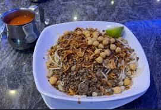

my favorite food in egypt
kushari
arb overload coming right at you come lunch time in cairo you'll see astack of locals lined up at every kushari shop around, waiting for a hearty portion of one of egypt 's favourite street foods. this filling meal is made up of rice, macorine and lentils, tooped with tomato sauce, garlic vingar and garnashid with chickpeas and fried onions . it's a perfect meal that is substantail, nutrient-packed and cheap. exactly what the egyption were after!
fool w taameya
taameya and ful mudammas, wich are essentialybfava beans and falafel are the original egyption fast-foods. they are a staple of the egyption diet, mainly because they are filling and use ingredients that are easily accesible in the country. the ful is made of fava beans that are cooked for hours in a pot called a qedra. the taameya, which is an egyption falafel ,is made out of crushed fava beans that is later made into apaste, then frid. nowadays you can find falafels all over the middele east however, egypt is the actual origin of those delightful frid treats. aperfect dish for all you vegos